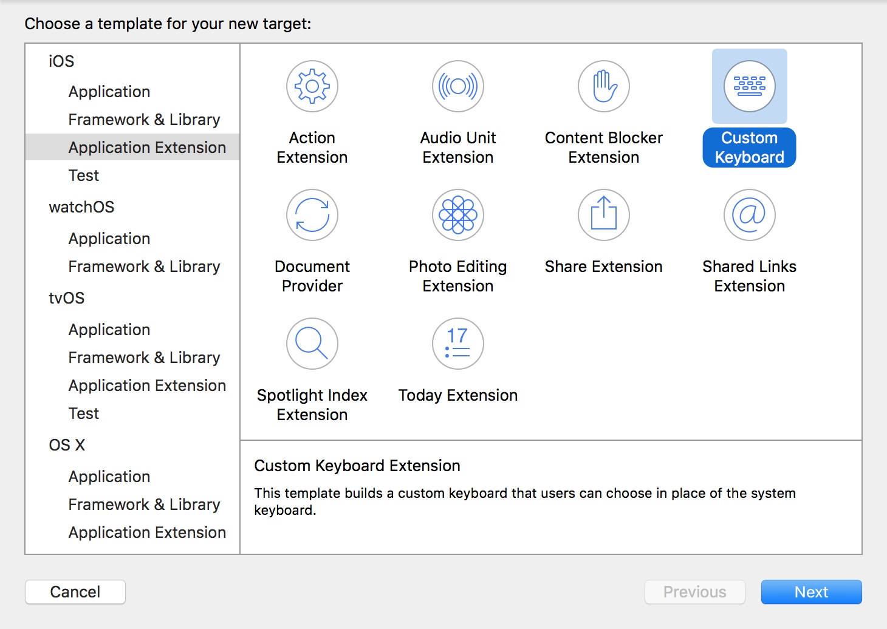
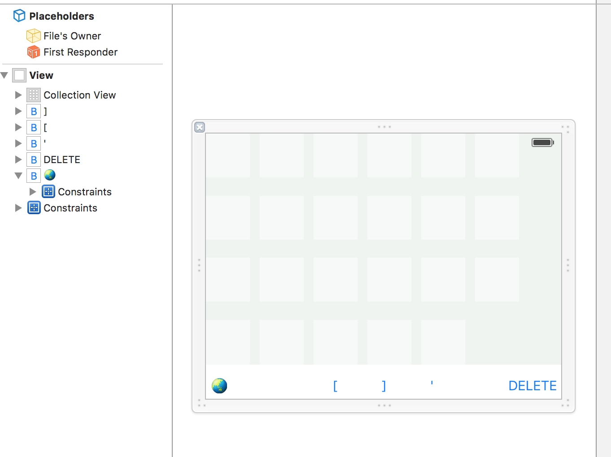
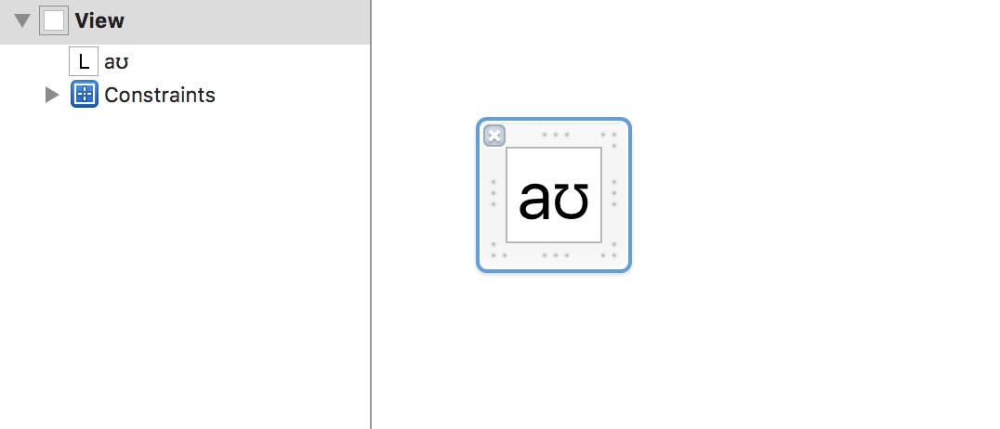
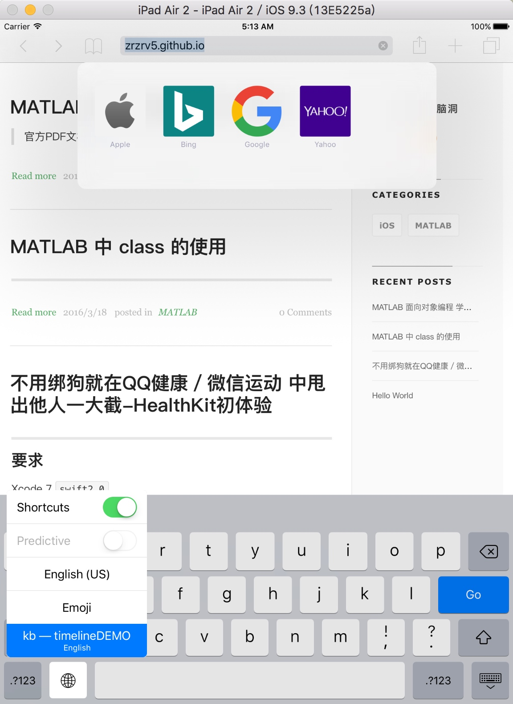
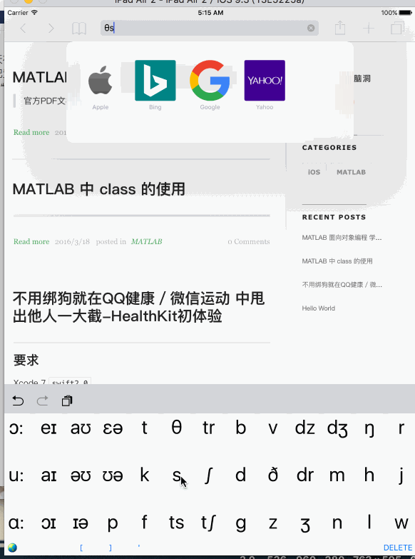

最近需要输入音标,一时间没有找到合适的App,于是就考虑自己写一个简单的音标输入法
要求:
Swift 2,Xcode 7
iOS新手,代码略混乱
概述
APP Extension
App Extension允许用户在整个系统(iOS/OSX)使用App的一些功能,其中就包括自定义键盘.
自定义键盘
自定义键盘在苹果官方文档里已经介绍得比较详细了.
主要有以下几点注意:
- 如果只是为你自己的App而打造的输入键盘,那就不要用自定义键盘,iOS提供了更好的选择: Custom Views for Data Input in Text Programming Guide for iOS.
- 自定义键盘必须要能够切换到别的键盘
- 自定义键盘在有时候是不能输入的(例如输入安全信息时,电话键盘...)
- 自定义键盘是无法像系统键盘一样超出键盘范围范围
- 一大堆限制,加密,麦克风等都不行
Let's Code
- 新建工程后新建一个Target,自然是选择Custom Keyboard
- 开始写界面,其实可以用Storyboard来写的,但是这里为了简单就直接写View&xib了 界面大概是这样: keyboardView collectionView里面显示48个基本IPA88音标,左下角的地球代表换键盘,右下角的DELETE代表删除 至于collectionView的Cell,我做的比较简单,就塞个Label进去 
然后把对应的类写好
KeyCell:// // KeyCell.swift // timelineDEMO // // Created by 薛定谔弄死的猫 on 16/3/21. // Copyright © 2016年 薛定谔弄死的猫. All rights reserved. // import UIKit @IBDesignable class KeyCell: UICollectionViewCell { var view :UIView! override init(frame: CGRect) { // 1. setup any properties here // 2. call super.init(frame:) super.init(frame: frame) // 3. Setup view from .xib file xibSetup() } required init?(coder aDecoder: NSCoder) { // 1. setup any properties here // 2. call super.init(coder:) super.init(coder: aDecoder) // 3. Setup view from .xib file xibSetup() } func xibSetup() { view = loadViewFromNib() // use bounds not frame or it'll be offset view.frame = bounds // Make the view stretch with containing view view.autoresizingMask = [UIViewAutoresizing.FlexibleWidth, UIViewAutoresizing.FlexibleHeight] // Adding custom subview on top of our view (over any custom drawing > see note below) addSubview(view) } func loadViewFromNib()->UIView{ let bundle = NSBundle(forClass: self.dynamicType) let nib = UINib(nibName: "KeyCell", bundle: bundle) let view = nib.instantiateWithOwner(self, options: nil)[0] as! UIView return view } }再在KeyboardView里面加上音标
var keys = keys = ["ɪ","ə","ɒ","ʊ","ʌ","e","æ","i:","ɜ:","ɔ:","u:","ɑ:","eɪ","aɪ","ɔɪ","aʊ","əʊ","ɪə","ɛə","ʊə","p","t","k","f","θ","s","ts","tr","∫","t∫","b","d","g","v","ð","z","dz","dr","ʒ","dʒ","m","n","ŋ","h","l","r","j","w"]加上collectionView的dataSource和delegate.我这里的keyboardView继承的是
UIControl,在collectionView的collectionView(collectionView: UICollectionView, didSelectItemAtIndexPath indexPath: NSIndexPath)方法里使用sendActionsForControlEvents(.ValueChanged)来处理交互相应
整个keyboardView的代码如下:(这里处理点击文本较为粗糙,直接使用一个currentText)// // KBV.swift // timelineDEMO // // Created by 薛定谔弄死的猫 on 16/3/21. // Copyright © 2016年 薛定谔弄死的猫. All rights reserved. // import UIKit @IBDesignable class KBV: UIControl,UICollectionViewDataSource,UICollectionViewDelegate { var view :UIView! var keys = [String]() var currentText = "" @IBOutlet weak var collectionView: UICollectionView! @IBAction func deleteInput(sender: AnyObject) { currentText = "DELETE" sendActionsForControlEvents(.ValueChanged) } override init(frame: CGRect) { // 1. setup any properties here // 2. call super.init(frame:) super.init(frame: frame) // 3. Setup view from .xib file xibSetup() } required init?(coder aDecoder: NSCoder) { // 1. setup any properties here // 2. call super.init(coder:) super.init(coder: aDecoder) // 3. Setup view from .xib file xibSetup() } func xibSetup() { view = loadViewFromNib() // use bounds not frame or it'll be offset view.frame = bounds // Make the view stretch with containing view view.autoresizingMask = [UIViewAutoresizing.FlexibleWidth, UIViewAutoresizing.FlexibleHeight] // Adding custom subview on top of our view (over any custom drawing > see note below) addSubview(view) setUpUI() } func collectionView(collectionView: UICollectionView, numberOfItemsInSection section: Int) -> Int { return keys.count } func collectionView(collectionView: UICollectionView, cellForItemAtIndexPath indexPath: NSIndexPath) -> UICollectionViewCell { let cell = collectionView.dequeueReusableCellWithReuseIdentifier("cell", forIndexPath: indexPath) (cell.viewWithTag(1)as!UILabel).text = keys[indexPath.row] return cell } func collectionView(collectionView: UICollectionView, didSelectItemAtIndexPath indexPath: NSIndexPath) { print("input IPA:\(keys[indexPath.row])") self.currentText = keys[indexPath.row] sendActionsForControlEvents(.ValueChanged) } func loadViewFromNib()->UIView{ let bundle = NSBundle(forClass: self.dynamicType) let nib = UINib(nibName: "KBV", bundle: bundle) let view = nib.instantiateWithOwner(self, options: nil)[0] as! UIView return view } func setUpUI(){ collectionView.dataSource = self collectionView.delegate = self collectionView.registerClass(KeyCell.self, forCellWithReuseIdentifier: "cell") setUpKeys() } func setUpKeys() { keys = ["ɪ","ə","ɒ","ʊ","ʌ","e","æ","i:","ɜ:","ɔ:","u:","ɑ:","eɪ","aɪ","ɔɪ","aʊ","əʊ","ɪə","ɛə","ʊə","p","t","k","f","θ","s","ts","tr","∫","t∫","b","d","g","v","ð","z","dz","dr","ʒ","dʒ","m","n","ŋ","h","l","r","j","w"] collectionView.reloadData() } @IBAction func changeKB(sender: AnyObject) { currentText = "NextKeyboard" sendActionsForControlEvents(.ValueChanged) } }设置
KeyboardViewController设置键盘约束
override func updateViewConstraints() { super.updateViewConstraints() let constraints1 = NSLayoutConstraint(item: keyboardView, attribute: .Trailing, relatedBy: .Equal, toItem: view, attribute: .Trailing, multiplier: 1, constant: 0) let constraints2 = NSLayoutConstraint(item: keyboardView, attribute: .Leading, relatedBy: .Equal, toItem: view, attribute: .Leading, multiplier: 1, constant: 0) let constraints3 = NSLayoutConstraint(item: keyboardView, attribute: .Top, relatedBy: .Equal, toItem: view, attribute: .Top, multiplier: 1, constant: 0) let constraints4 = NSLayoutConstraint(item: keyboardView, attribute: .Bottom, relatedBy: .Equal, toItem: view, attribute: .Bottom, multiplier: 1, constant: 0) view.addConstraints([constraints1,constraints2,constraints3,constraints4]) // Add custom view sizing constraints here }监听
keyboardView的ValueChanged:keyboardView.addTarget(self, action: "handleInput", forControlEvents: .ValueChanged)处理点击按钮
func handleInput() { let proxy = textDocumentProxy switch keyboardView.currentText { case "DELETE": print("DELETE") proxy.deleteBackward() case "NextKeyboard" : print("NextKeyboard") advanceToNextInputMode() default: print(keyboardView.currentText) proxy.insertText(keyboardView.currentText) } }4.删除默认的那个及其相关代码
swift
@IBOutlet var nextKeyboardButton: UIButton!
至此这个粗糙的音标键盘就完成了
效果
注意不要忘了在设置里把键盘添加上
长按地球图标切换键盘:
动态演示:

The End
也许是时候,写一个表情包输入法了🌝🌚